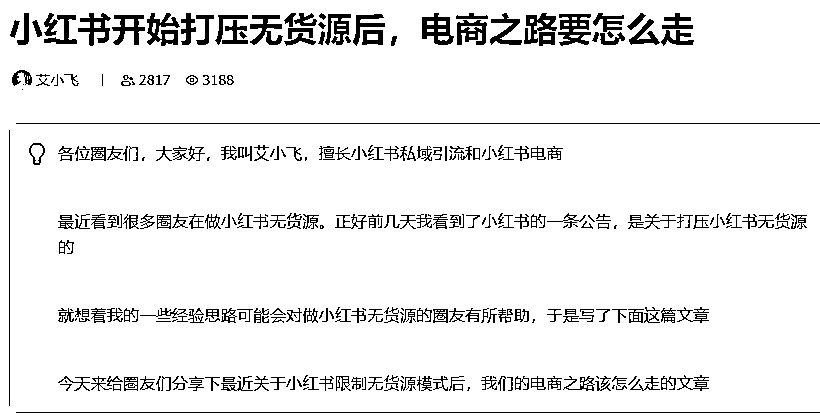
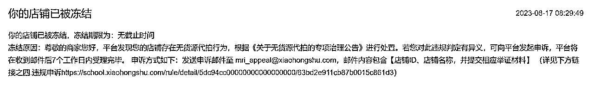
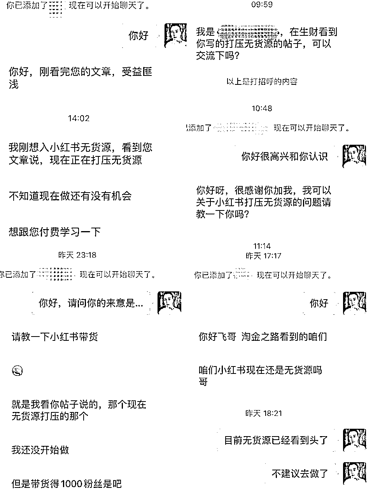
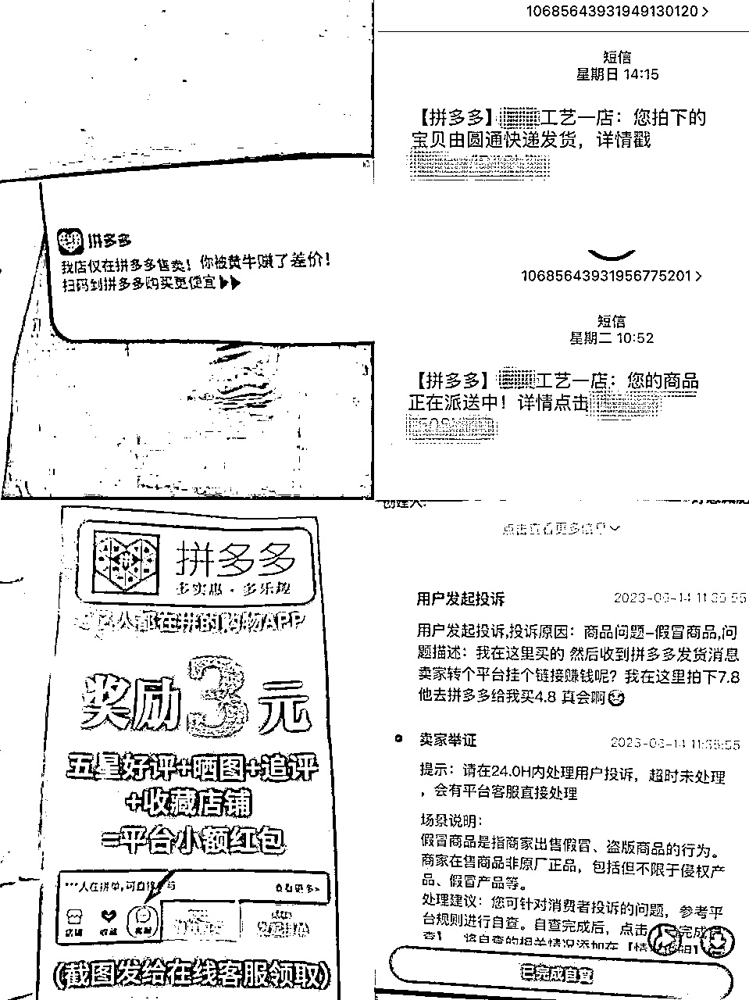
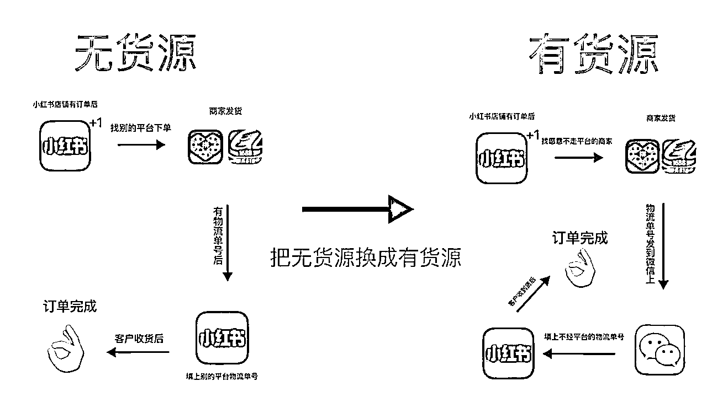
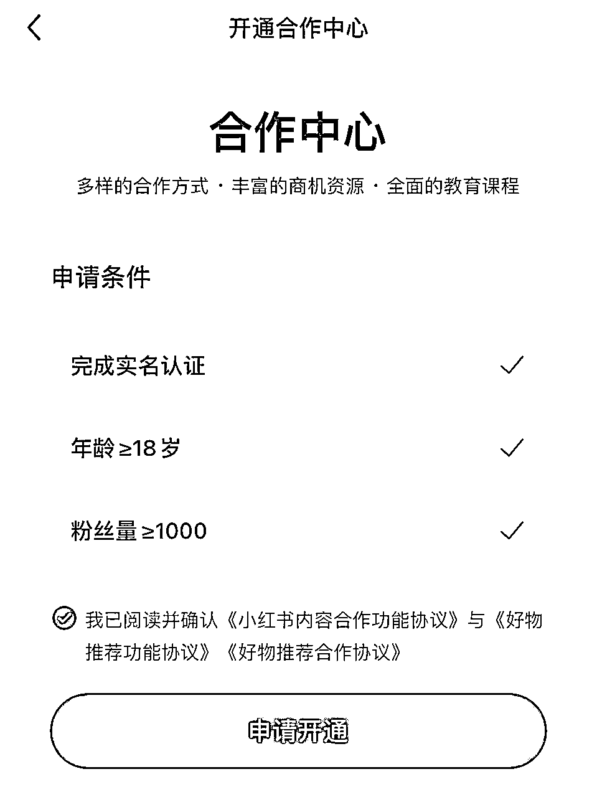
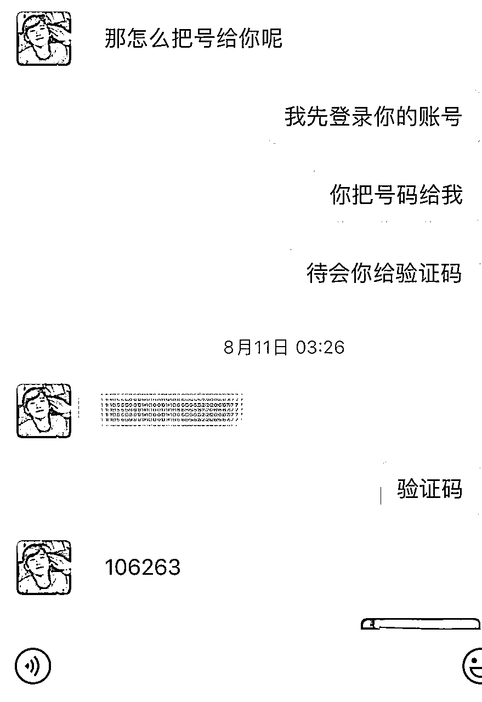
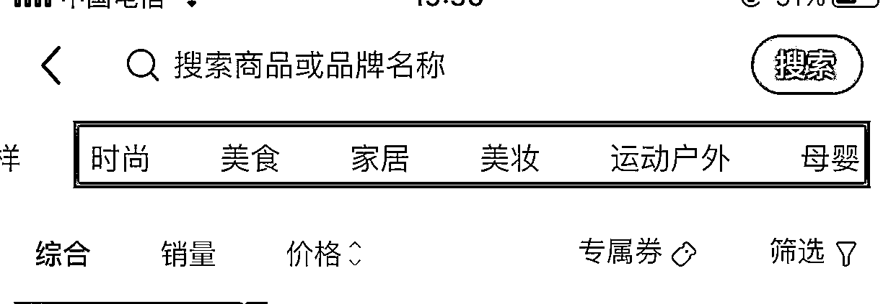
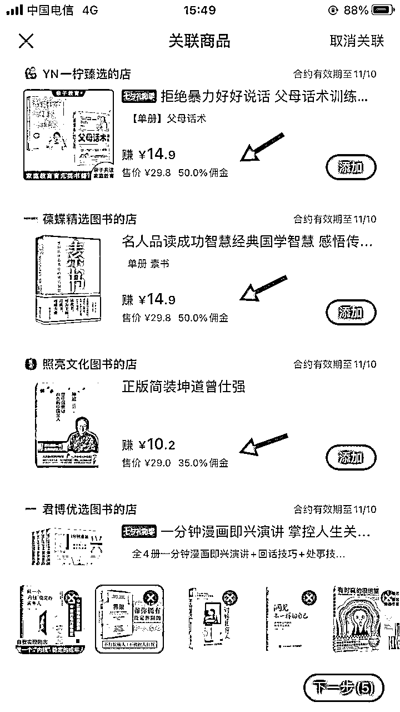

来源：https://nivut760ftk.feishu.cn/docx/JoI0doFzioq4D2xfTOLceDiNnBe
大家好，我叫艾小飞，目前从事小红书电商和引流。
自从我上周分享完这篇文章后反响很大

很多圈友都意识到了，平台的电商红利已渐渐消失，也感受到平台打压无货源的力度越来越大，能给我们获利的机会，越来越少了
这不，这周小红书平台，又开始新一轮的强制打压了

之前我预测平台可能会对无货源店铺限流什么的，好家伙，看来是我看轻小红书官方的动作了，这直接把你店铺都给封了呀
只要是发现还在做无货源的，要么就强制关店，要么就冻结账户不能提现，这个无疑是个沉重的打击
官方这波操作下来，真的让人挺绝望的，在圈里，我看到越来越多的人开始焦虑。开始迷茫，开始寻找下一个能替代无货源的项目，“这回咋办？”成了每个人的口头禅，也成了朋友圈的标准文案...
首先是最近很多圈友都是在做无货源方面的，业务上都受到了影响，我分享完无货源的干货后，他们都来加我解答疑惑，我也感受到了他们内心的迫切感，很想知道下一步该怎么走，有什么能平替的项目可做的

正好前段时间我刚从无货源转型出来，跑通了一个能平替无货源的项目，算是有点经验和心得吧，打算分享一篇文章来给你们打打气，至少让你们看到 ，不光是你店铺被打压了，还有很多人都跟你一样的处境
而且不单单只有无货源这个项目可以做，能赚钱的轻项目还是有很多的，先别急着焦虑，待会听我分享一点点干货，也许能帮助你走出迷茫！
在这里可能你会好奇，为什么平台会死死抓住无货源商家不放呢？
根据官方的解释，和我个人的猜测啊，我总结了以下几点，你们参考下
我认为首先第一点，就是信息安全的问题，因为做无货源嘛，它就必须要复制客户的收货信息，然后到拼多多或1688去下单，完成交易。
因为做的人多了，平台肯定管不过来，事后难免会有人利用这种信息，去卖给中间商，中间商再转卖给缅北的公司做诈骗！！！
特别是近几年来，国家对于信息安全的问题，越来越重视，就像前段时间，正在热映的《孤注一掷》电影里的情节那样
为什么那些诈骗人员手中，会精准地获取到客户的详细信息，比如他最近买了什么，多少钱，家住哪，叫什么名字等等，这是非常恐怖的，所以为了大家的信息安全，平台干脆就直接封掉这个项目玩法，不给做了
那么第二点就是投诉的问题，随着现在越来越多人在小红书上做无货源电商，有很多用户收到货后，发现自己买的东西，怎么会出现拼多多的短信、面单，甚至是包裹内的卡片，这就让人感到很气愤啊！

在高质量的平台，本以为能买到一个有质感的产品，没想到收到却是低质，还被商家中间给吃了差价的产品
换谁谁不气，换谁谁服气！然后就有越来越多的客户，向平台去投诉这个事情
同时，平台也为了维护市场更好的发展，也不希望看到在自己的地盘上，出现这样的情况，所以就开始整顿打压这种行为
第三点就是侵权的问题了，很多人在供应方或品牌方不知情的情况下，擅自售卖他们的产品，这就无形中造成了侵权，因为有些产品是需要授权才能卖的，而有些人不知道这点，就直接上架到平台卖，导致很多供应商和品牌方就直接向平台去举报了
我认为以上三点，是平台决心要打压这个无货源模式的原因，特别是第一点，不管是哪个平台，都是没办法能容忍的。
所以无货源，不管你怎么做，它始终是不长久的
既然平台在打压这种模式，那正在做无货源的商家该怎么办呢？
在这里，我可以给你们几点思路作个参考吧
因为平台它检测无货源的，先是看你的物流单号，是否被重复利用过
举个例子
如果你有客户，在小红书店铺下单了，你要跑到拼多多去下单对吧
拼多多商家就用拼多多的平台面单打单，来给你发货然后你要复制拼多多的物流单号，到小红书平台上
平台发现你这个物流单号，已经在别的平台被使用过了，那么你这个情况，就是会被判为无货源的
轻的，可能会限制你发货，严重的，可能就直接把你的店给关了
其实很简单的，就是你给小红书用户发货的时候，一定不能有第三方的平台物流面单，你可以走私下交易
比如说
有客户在你的小红书店铺下单了对吧，你可以联系拼多多的商家，看能不能通过微信的形式，来给你发物流单号
只要单号不走平台，那么你这个，就是有货源，平台是没有办法判你为无货源的
如果你们还不懂，我画个图给你们看看

无货源和有货源之间的区别，相差的仅仅是一个单号属性
我建议你，可以直接放弃这个玩法了
因为越往后，平台管理会越来越严，打压的力度会越来越大，你高高兴兴地猛出单，最后可能你连钱都提不出来，店都把你的给关了，申诉的机会都没有，这才是最痛苦难受的
你看看现在能不能清完最后一波货，就赶紧撤出来了，不要抱有侥幸的心理
你以为现在没被平台发现和处罚，就没事了对吧，其实平台这一波打压下来，它也是下了很大决心的
我建议你最好不要去跟平台做对抗，不单单是打不过，更何况我们还要依靠在它的地盘上生存赚钱呢，何必呢对吧，不要有这样的想法
说完了有货源，那已经放弃的无货源商家，接下来该怎么办？
说到这个，我是很能理解你们那种感受的，因为早在半个月前，我提前预判了平台的预判，忍着痛关掉了我所有的店铺，头也不回的，直接转型去测试新的项目去了
所以我很能理解，你们想要在短时间内，找到一个能平替无货源的项目，不说渴望什么大富大贵吧，至少能维持基本的生活开支就行，对吧
如果你还打算继续在小红书发展下去的话，我可以推荐你往这三个方向去走
首先是小红书直播，现在平台对于小红书站内直播，扶持的力度是非常大的，而且新人开播还会有很多的流量扶持，但是有个小门槛，那就是需要有一定的表达能力
今年以来，小红书也开始了大力扶持本地生活，因为小红书平台本身就有很强的种草属性，特别是关于旅游、美食、住宿等方面，所以平台也结合了它的优势，正在大力的发展小红书本地生活
这个玩法就有点类似于抖音的橱窗带货一样，就是你在小红书上种草别家的产品，挂上别家店铺的链接，只要客户通过你这篇笔记下单，你就会得到相应比例的佣金，就这么简单。
我也发现目前正在做这方面的人比较少，所以在我转型之后，我的第一个起步方向，就是先从小红书笔记带货开始
这个玩法它相对于无货源来说，它不需要你垫付资金，不需要你去开通店铺，也不需要你售后维护，更不需要你去发货，比无货源来说更轻松一点
虽然它看起来操作很轻松，但是有小门槛的，官方给出的条件是，必须要同时满足有帐号满1000粉丝，实名和无历史违规记录。

可能后面这两点都还好解决，但对满足1000账号粉丝来说，很多人都难达到这个标准，那怎么办呢？
怎么涨粉
你们即将遇到的这个问题，当初我也遇到过，不管是尝试买粉刷粉，还是暴力涨粉
都达不到在半天内，就能从0涨到1000粉，后来我是直接去买号给解决了，只要是不违规的，我都收。

但买粉这里面还是有很多坑的，还因此被骗了300块钱...这个又是另一段故事了哈哈
如果你们完成了官方要求的基本门槛后，那么你们就可以去卖货了
那卖什么货比较好呢？
当时我看了一下小红书选品中心里面的产品，发现类目是真的少的可怜，来来去去也就那几个类目

刚开始我纠结了很久，最后还是选择卖书试试
因为卖书的佣金比例是比较高的，普遍是在30%-50%区间

而且小红书的用户人群是比较喜欢看书的，用户基本上都是一二线城市的高消费高质量女性
每发一条看书的笔记，都会有人来看，养号两三天后，基本上就能出单了。每单都能赚到一半的钱，还是挺爽的
如果你们想做，我推荐你们也可以去试着卖书
注意事项：
但这里有个注意的点，不是说你选择了卖书，就一定马上能出单的，它是有一定概率性和技巧的，这个心态要放好
同时卖书不要选过于小众和冷门的书籍，要选热门的，特别是关于自我提升成长类的书
这类书籍在小红书上比较受欢迎，但竞争力大。你必须要靠差异化的打法去做，才能出单
如果你们还在迷茫，不懂要做什么项目时，这个还是比较吃香的，趁现在做的人还不是很多，可以提前去抢占一波蓝海市场
当然你们不一定非要跟我一样去卖书，可以去卖别的产品也行的
但不管你想卖什么产品，我建议你一定要去迎合小红书用户的喜好去卖，看看他们喜欢什么，你们多去搜，多去找，然后测品测封面，测标题和测文案， 有流量了再去上架，这样会更容易出单
其实当初我做小红书，就是看中了它的用户人群质量高，引流快，对于新人来说，很快就能在小红书上看到你想要的效果
其实，小红书未来还有很长的一段路要走，官方也正在慢慢地去完善，它内部的电商体系，往后平台也会逐渐的走向正规化，管理也会越来越严格，可能无货源模式也会慢慢变成一种擦边的项目了，做也可以做，但不长久
如果正在做无货源的朋友，如果你看到这里，我建议你可以考虑去转型做别的项目吧
机会都是留给有准备的人的，刚我分享的那三个方向，趁现在做的人还不算多，如果你们提前去做平台鼓励的项目，那你就是第一波吃螃蟹的人
如果你想等到人家都赚完一波了再做，不单单是竞争的人多了，而且到那时候，平台也会对这项目管理越来越严，从中能获利的机会，也就越来越少了
其实我分享这么多，我主要想表达的是，能让你们意识到平台打压无货源的严重性，同时分享一点点无货源平替项目的思路玩法
如果你们能从中得到一些新的启发，那我认为我分享的东西是有价值的
好啦，今天的分享就到这里了，希望你们都能转型成功，祝大家能顺利地跑通下一个项目，谢谢大家，我叫艾小飞！
原创：艾小飞
转载可私信
禁止搬运和抄袭
微信：aifei9977 （记得备注来意）